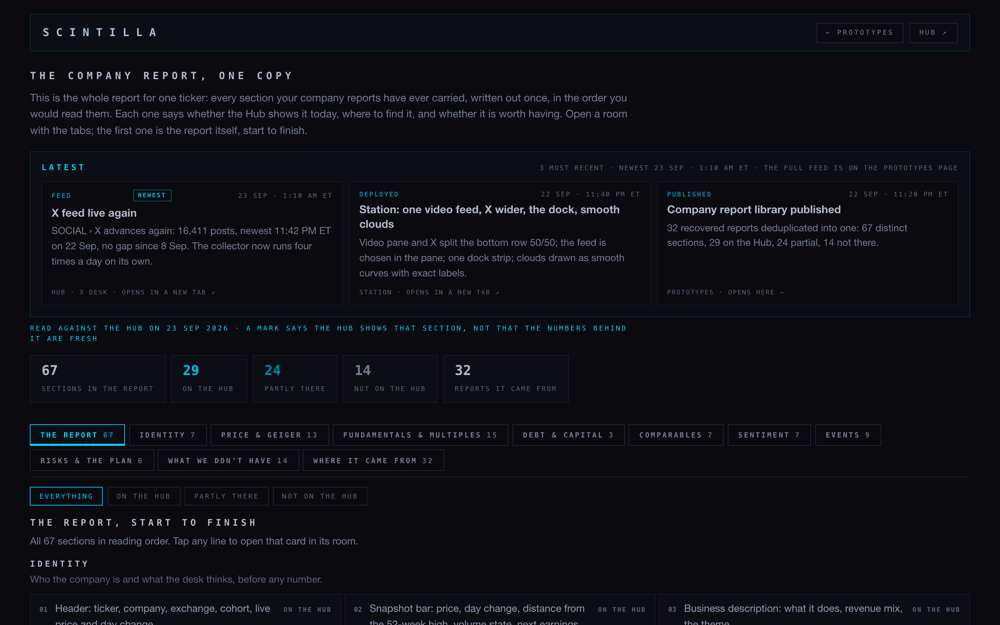
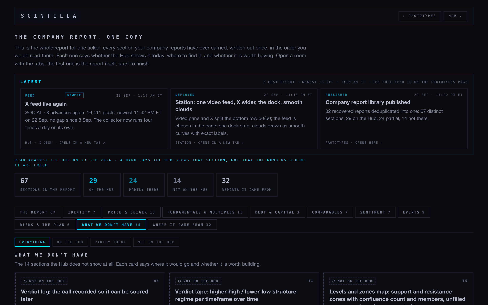
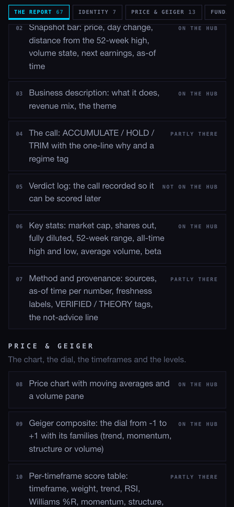
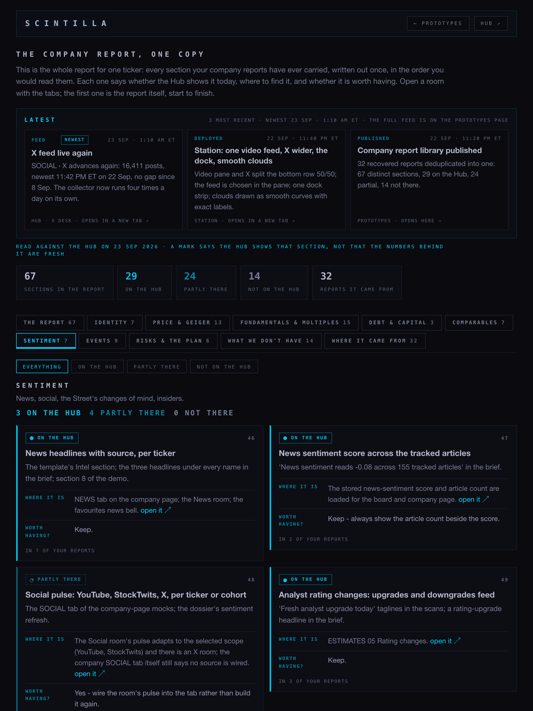
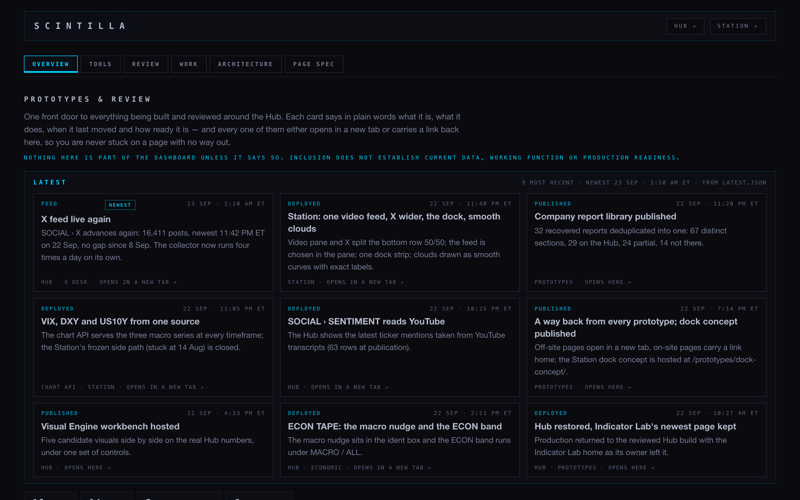
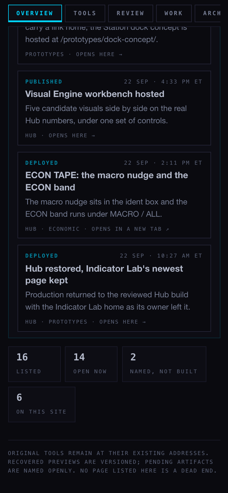

The company report, and the prototypes page as cards
Two pages. One is the whole company report written out once, with every section marked against what the Hub shows today. The other is the front door to the prototypes, redone so it reads like the workshop page you liked: a strip of rooms that stays with you, cards that reflow, and what just shipped at the top with its date.
“Company report library… a complete template… per ticker… compare to what we have on Hub.” · “Dedupe… one long report… split it by section… mark what we have on Hub versus what we don’t.” · “Prototypes and report library redone as cards… the 3D workshop… tabs… a latest feed.” · “My navigational layer in the prototypes page… stale… not very cardified or readable.”Your words, 22–23 Sep
The report, in numbers
Every distinct section from your recovered company reports is written once, in the order you would read it, grouped into nine parts: who the company is, price and the dial, fundamentals and multiples, debt, comparables, sentiment, events, risks and the plan. Each card says in plain words what the section is, whether the Hub shows it, where to find it, and whether it is worth having. A mark says the Hub shows that section — not that the numbers behind it are fresh.
The page no longer talks about which file was canonical, which version was tested, or any commit. That was our bookkeeping, and it is gone from what you see.
The fourteen the Hub does not show at all
The call, kept
A verdict log so a call can be scored later, and a verdict tape showing the structure regime per timeframe over time.
Levels, zones and the ladder
The support and resistance map with confluence counts, unfilled gaps and round numbers; the invalidation rule; and the buy/sell ladder with size per rung.
Volatility and sessions
ATR 14, zone band, pivot window and gap threshold; London, New York and after-hours highs and lows.
Ladders and tiers
Trend, momentum, volatility, volume and price as live cells per timeframe, and the SUPPORTED / OVEREXTENDED / COOLING tier with its acceleration score.
Returns on capital
ROIC, ROE and ROA. Nowhere on the company page or the comps table.
Head to head, guidance, risk triggers
Where one name beats another and the caveats; a basket or pair idea; next-quarter guidance against the Street; and what flips the thesis bearish.
What the pages look like, at the three sizes I checked






What I changed this morning
- Picked up the run that was stopped on the iMac at 10:40 and carried its work forward rather than starting again. Nothing of it was lost.
- Put a Latest feed on the report library too, from the same file the prototypes page reads, so both pages say the same thing about what just shipped. Three newest, with dates, the newest badged.
- Made the strip of rooms stay with you as you scroll, on both pages, after the workshop page. Under 900 px it becomes one line you swipe instead of five stacked rows.
- On a phone the five numbers now sit two to a row, so the first card arrives a screen sooner.
- Fixed four checks that had been left mid-edit and did not match the pages, and tightened two others that were too blunt: one read a screen-size rule as if it were a fixed box, the other did not know the Station was one of your products.
Honest limits
Nothing is deployed and nothing is pushed. Both pages are built by a script from a list, so the counts on them cannot drift from the list.
This page is an inventory of sections, not an analysis: the numbers inside your reports belong to the day each was written, and none of them are restated here. A mark of “on the Hub” means the Hub has that section on screen, not that its data is current.
One check in the tree fails and it is not from this work: the Hub page now prints a video’s age in five places where the rule allows four. It fails the same way on the last commit before I started. It belongs to the YouTube lane, so I left it alone and am telling you instead of quietly fixing it.